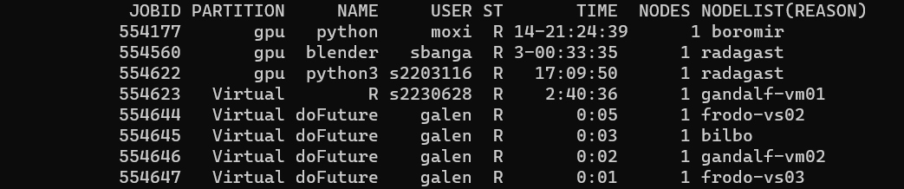
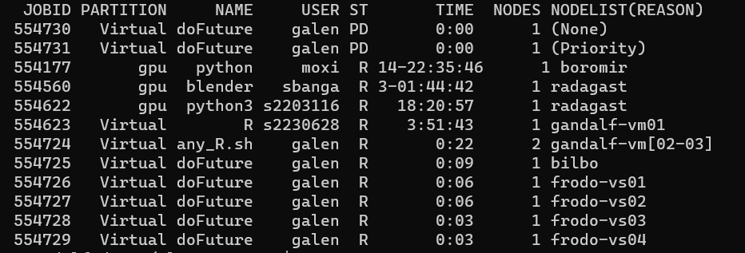

# number of iterations
25*25[1] 6259*12*6[1] 648Galen Holt
I need to sort out how to use futures for parallel processing on the HPC.There’s a few things I’ve tried previously that didn’t work, and a way I’ve cobbled together that’s not ideal.
plan(cluster) sounds like it should work but doesn’t. It might with {slurmR}
Just requesting multiple nodes and hoping multisession or multicore find them. They don’t.
What I currently do- array jobs on SLURM to handle the nodes, then get the SLURM_ARRAY_ID in R, use that to chunk the data in scripts built for it, and then doFuture foreach on the cores within that node.
There are some issues with my current approach
It’s not very portable- code has to be different locally and on the HPC
It’s not very flexible- we need to know a priori how we want to chunk into the arrays. And so we can’t dynamically assign jobs to nodes based on how many jobs there are.
There are some improvements I want to make that will make my code work better (and faster)
Minor (if any) changes when running locally or on an HPC
In-code splitting of work into nodes to balance the work across them
Make sure we’re using both nodes and cores within them
The main solution seems to be using future.batchtools, but I wasn’t able to get it working quickly.
There are a few big-picture things I have questions about that aren’t clear from reading the docs (in addition to just ‘how do we get a run to work’)
How do jobs actually start? I think, but am not 100% sure, that the R script essentailly builds slurm bash scripts and then calls sbatch. Is that what happens?
Do we still use sbatch or other command-line bash at all? Or is everything managed in R? If so, how do we actually start the runs? Rscript? srun on an R control script?
Rscript, do we end up with that main R process running in the login node the whole time? What about if srun or…Rscript? srun?sinteractive? sbatch any_R.sh analysis_script.R? With any_R.sh having low resources but maybe long walltime? It looks like srun barfs to the terminal and blocks, while sbatch outputs to file and is non-blocking. So that’s likely the way to go.Does it make sense to manage nodes and cores separately, or do we just ask for a ton of cores and it auto-manages nodes to get them?
I think {slurmR} with plan(cluster) does the latter, but not positive
I’m not actually sure what future.batchtools does by default (will check), but I think a list-plan likely makes sense.
do we use SLURM job arrays? Or does it generate a bunch of batch scripts that get called as separate jobs instead of array jobs? Does it matter?
If we feed it a big set of iterations, does it send each one to its own node? Its own core? Is there any chunking?
I’ll use my HPC testing repo to build some template and testing files. There are useful help pages, but somehow none of them quite just make complete sense to me, so I’m going to have to try things and see what happens.
Useful pages I’m referencing:
I’m still a bit confused by the overall workflow, but it’s clear I need a template. There’s one in future.batchtools github, and a few at the batchtools github.
Then I think in the plan call, we tweak that? Let’s just get it working. Trying first with the one that comes from future.batchtools. Though the one from batchtools looks like it has more capability for doing things like managing cores on nodes. Maybe try them both as we go?
I have both of those. I kind of want to test both. The docs say the template should be either at ./batchtools.slurm.tmpl (associated with a particular working directory) or ~/.batchtools.slurm.tmpl (for all processes to find it). But I want to be able to test multiple templates. I should be able to use
plan(batchtools_slurm, template = "/path/to/batchtools.slurm.tmpl")but its a bit unclear whether the templates still need to be named batchtools.slurm.tmpl, or can have whatever filename we want, as long as I give the path. Guess I’ll test that. Try first with it as batchtools.slurm.tmpl in the repo directory first though.
Use the future.batchtools template, and a foreach loop using %:%.
Start with Rscript filename.R
It starts printing directly to terminal, which is annoying.
Opening another terminal and typing squeue shows that I have 4 nodes- though actually that was just at that moment.
It doesn’t seem to produce stdout or stderr, which is going to make it tricky to see what happened. See below- this is true unless we run the master R session through sbatch.
I can copy in from the terminal output:
::: {#Simple output} Loading required package: foreach Loading required package: future Warning message: package ‘future’ was built under R version 4.0.5 Loading required package: parallelly Warning messages: 1: package ‘future.batchtools’ was built under R version 4.0.5 2: package ‘parallelly’ was built under R version 4.0.5
Plan is: List of future strategies: 1. batchtools_slurm: - args: function (expr, envir = parent.frame(), substitute = TRUE, globals = TRUE, label = NULL, template = NULL, resources = list(), workers = NULL, registry = list(), …) - tweaked: FALSE - call: plan(batchtools_slurm)
localhost localhost localhost localhost localhost localhost localhost localhost
8
localhost
8
1
3195570 There were 50 or more warnings (use warnings() to see the first 50)
100
IDs of all cores used
238059 1524768 1518289 1500375 1513942 3264114 1269189 1345061 2623254 238128 3264182 1269259 1345124 1524852 1518372 3264251 238197 1500450 1514026 1524930 1518447 238268 3264327 1500525 1514101 238335 1525010 1518527 1500596 1514176 3264408 238401 1525084 1518604 1500666 1514254 3264478 1518681 238466 1525164 1500739 1518756 1514328 238530 1500811 1525241 1514402 1518828 1500879 238594 1525316 1514479 3264562 1518901 1500952 238662 1525391 1518977 1514555 1501019 3264640 238727 1525467 1519049 1514630 238791 1501090 1525542 3264715 1519121 1501158 238857 1525621 1519194 1514708 1501225 3264796 238922 1525693 1519271 1514786 1501292 3264863 1525766 238989 1519345 1514861 1525839 1501361 239060 3264939 1519420 1514936 1501428 1525912 239129 3265003 1519494 1501496 1525987
238059 238128 238197 238268 238335 238401 238466 238530 238594bilbo 6 6 6 6 6 6 7 6 7 frodo-vs01 0 0 0 0 0 0 0 0 0 frodo-vs02 0 0 0 0 0 0 0 0 0 frodo-vs03 0 0 0 0 0 0 0 0 0 frodo-vs04 0 0 0 0 0 0 0 0 0 gandalf-vm02 0 0 0 0 0 0 0 0 0 gandalf-vm03 0 0 0 0 0 0 0 0 0 gandalf-vm04 0 0 0 0 0 0 0 0 0 gandalf-vm05 0 0 0 0 0 0 0 0 0
238662 238727 238791 238857 238922 238989 239060 239129 1269189bilbo 6 7 7 6 7 6 7 6 0 frodo-vs01 0 0 0 0 0 0 0 0 0 frodo-vs02 0 0 0 0 0 0 0 0 0 frodo-vs03 0 0 0 0 0 0 0 0 0 frodo-vs04 0 0 0 0 0 0 0 0 0 gandalf-vm02 0 0 0 0 0 0 0 0 0 gandalf-vm03 0 0 0 0 0 0 0 0 7 gandalf-vm04 0 0 0 0 0 0 0 0 0 gandalf-vm05 0 0 0 0 0 0 0 0 0
1269259 1345061 1345124 1500375 1500450 1500525 1500596 1500666bilbo 0 0 0 0 0 0 0 0 frodo-vs01 0 0 0 0 0 0 0 0 frodo-vs02 0 0 0 0 0 0 0 0 frodo-vs03 0 0 0 6 6 6 6 7 frodo-vs04 0 0 0 0 0 0 0 0 gandalf-vm02 0 0 0 0 0 0 0 0 gandalf-vm03 6 0 0 0 0 0 0 0 gandalf-vm04 0 6 6 0 0 0 0 0 gandalf-vm05 0 0 0 0 0 0 0 0
1500739 1500811 1500879 1500952 1501019 1501090 1501158 1501225bilbo 0 0 0 0 0 0 0 0 frodo-vs01 0 0 0 0 0 0 0 0 frodo-vs02 0 0 0 0 0 0 0 0 frodo-vs03 6 6 6 6 6 6 6 6 frodo-vs04 0 0 0 0 0 0 0 0 gandalf-vm02 0 0 0 0 0 0 0 0 gandalf-vm03 0 0 0 0 0 0 0 0 gandalf-vm04 0 0 0 0 0 0 0 0 gandalf-vm05 0 0 0 0 0 0 0 0
1501292 1501361 1501428 1501496 1513942 1514026 1514101 1514176bilbo 0 0 0 0 0 0 0 0 frodo-vs01 0 0 0 0 0 0 0 0 frodo-vs02 0 0 0 0 0 0 0 0 frodo-vs03 7 6 7 6 0 0 0 0 frodo-vs04 0 0 0 0 6 7 6 6 gandalf-vm02 0 0 0 0 0 0 0 0 gandalf-vm03 0 0 0 0 0 0 0 0 gandalf-vm04 0 0 0 0 0 0 0 0 gandalf-vm05 0 0 0 0 0 0 0 0
1514254 1514328 1514402 1514479 1514555 1514630 1514708 1514786bilbo 0 0 0 0 0 0 0 0 frodo-vs01 0 0 0 0 0 0 0 0 frodo-vs02 0 0 0 0 0 0 0 0 frodo-vs03 0 0 0 0 0 0 0 0 frodo-vs04 6 7 7 6 6 6 6 6 gandalf-vm02 0 0 0 0 0 0 0 0 gandalf-vm03 0 0 0 0 0 0 0 0 gandalf-vm04 0 0 0 0 0 0 0 0 gandalf-vm05 0 0 0 0 0 0 0 0
1514861 1514936 1518289 1518372 1518447 1518527 1518604 1518681bilbo 0 0 0 0 0 0 0 0 frodo-vs01 0 0 0 0 0 0 0 0 frodo-vs02 0 0 7 7 6 6 6 6 frodo-vs03 0 0 0 0 0 0 0 0 frodo-vs04 6 6 0 0 0 0 0 0 gandalf-vm02 0 0 0 0 0 0 0 0 gandalf-vm03 0 0 0 0 0 0 0 0 gandalf-vm04 0 0 0 0 0 0 0 0 gandalf-vm05 0 0 0 0 0 0 0 0
1518756 1518828 1518901 1518977 1519049 1519121 1519194 1519271bilbo 0 0 0 0 0 0 0 0 frodo-vs01 0 0 0 0 0 0 0 0 frodo-vs02 6 6 7 7 6 7 7 6 frodo-vs03 0 0 0 0 0 0 0 0 frodo-vs04 0 0 0 0 0 0 0 0 gandalf-vm02 0 0 0 0 0 0 0 0 gandalf-vm03 0 0 0 0 0 0 0 0 gandalf-vm04 0 0 0 0 0 0 0 0 gandalf-vm05 0 0 0 0 0 0 0 0
1519345 1519420 1519494 1524768 1524852 1524930 1525010 1525084bilbo 0 0 0 0 0 0 0 0 frodo-vs01 0 0 0 6 6 6 7 6 frodo-vs02 7 6 7 0 0 0 0 0 frodo-vs03 0 0 0 0 0 0 0 0 frodo-vs04 0 0 0 0 0 0 0 0 gandalf-vm02 0 0 0 0 0 0 0 0 gandalf-vm03 0 0 0 0 0 0 0 0 gandalf-vm04 0 0 0 0 0 0 0 0 gandalf-vm05 0 0 0 0 0 0 0 0
1525164 1525241 1525316 1525391 1525467 1525542 1525621 1525693bilbo 0 0 0 0 0 0 0 0 frodo-vs01 6 6 6 6 6 6 6 6 frodo-vs02 0 0 0 0 0 0 0 0 frodo-vs03 0 0 0 0 0 0 0 0 frodo-vs04 0 0 0 0 0 0 0 0 gandalf-vm02 0 0 0 0 0 0 0 0 gandalf-vm03 0 0 0 0 0 0 0 0 gandalf-vm04 0 0 0 0 0 0 0 0 gandalf-vm05 0 0 0 0 0 0 0 0
1525766 1525839 1525912 1525987 2623254 3264114 3264182 3264251bilbo 0 0 0 0 0 0 0 0 frodo-vs01 6 6 6 6 0 0 0 0 frodo-vs02 0 0 0 0 0 0 0 0 frodo-vs03 0 0 0 0 0 0 0 0 frodo-vs04 0 0 0 0 0 0 0 0 gandalf-vm02 0 0 0 0 0 6 7 6 gandalf-vm03 0 0 0 0 0 0 0 0 gandalf-vm04 0 0 0 0 0 0 0 0 gandalf-vm05 0 0 0 0 6 0 0 0
3264327 3264408 3264478 3264562 3264640 3264715 3264796 3264863bilbo 0 0 0 0 0 0 0 0 frodo-vs01 0 0 0 0 0 0 0 0 frodo-vs02 0 0 0 0 0 0 0 0 frodo-vs03 0 0 0 0 0 0 0 0 frodo-vs04 0 0 0 0 0 0 0 0 gandalf-vm02 7 7 6 6 6 6 6 6 gandalf-vm03 0 0 0 0 0 0 0 0 gandalf-vm04 0 0 0 0 0 0 0 0 gandalf-vm05 0 0 0 0 0 0 0 0
3264939 3265003bilbo 0 0 frodo-vs01 0 0 frodo-vs02 0 0 frodo-vs03 0 0 frodo-vs04 0 0 gandalf-vm02 6 6 gandalf-vm03 0 0 gandalf-vm04 0 0 gandalf-vm05 0 0 :::
The formatting of the table is all boogered up, but that looks like I got 9 nodes, and used something like 9-14 PIDs each, each about 7-6 times. It’s a bit confusing, because sinfo --Node --long shows that the number of CPUs is different across those nodes. And that seems to be what happened here. I need to change the output so I can better see what I used. But, roughly, that looks about right- it send jobs to CPUs as needed.
We seem to need to leave an R session running to operate the futures. We can probably do that interactively module load R, R, then run the code, or Rscript. But that’s all interactive. As is srun. And it all prints all printable output to the terminal, and doesn’t save it. I think an sbatch might be the way to go. Try that.
That does run, and spawn the others

It’s silly that we need another wrapper call, but maybe that’s ok. Gives us the option to do some auto-setup in an intermediate script.
repeatedly calling squeue shows something interesting- it looks like it’s creating separate jobs for each task, not doing anything node-aware (e.g. chunking jobs to a node, and then multisessioning). I guess that makes sense, based on the help and other testing, but we can almost certainly speed things up by chunking and list-planning.
If the passing-object overhead really becomes an issue, we might want to just use batchtools directly, which I think also could remove the need to leave a master R session running. But I think that gets rid of the major advantage of being able to use essentially the same code locally and on the HPC, just by changing the plan.
The output using sbatch batchtools_R.sh testing_future_batchtools.R (where batchtools_R.sh is a lightweight master job) is
ℹ Using R 4.0.3 (lockfile was generated with R 4.2.2)
Plan is:
List of future strategies:
1. batchtools_slurm:
- args: function (expr, envir = parent.frame(), substitute = TRUE, globals = TRUE, label = NULL, template = NULL, resources = list(), workers = NULL, registry = list(), ...)
- tweaked: FALSE
- call: plan(batchtools_slurm)
### available workers:
gandalf-vm01
### total workers:
1
### unique workers:
gandalf-vm01
### available Cores:
#### non-slurm
1
#### slurm method
1
### Main PID:
4135554
### Unique processes
100
IDs of all cores used
241089
1528094
1522003
1503388
1516888
3269690
1522077
241160
1528170
1503459
1516963
3269759
1522156
1528243
241230
3269825
1271878
1528317
1522235
241297
1503531
1528392
1517044
1522308
241367
1503606
1528471
1522380
1517120
241436
3269894
1528548
1522456
1503681
1517195
241505
1522531
1528626
3269975
1271968
1503749
241573
1522605
3270042
1528703
1503817
241641
1522682
1528778
1517275
3270121
1272046
241709
1528853
1522758
1503892
1517348
241778
1528932
1522829
1503961
1517420
3270199
241843
1529005
1522901
1504030
241910
1529082
1517500
3270277
1522975
1504098
241978
1529157
1523051
1504167
1517581
3270355
1529231
242042
1523125
1504238
1529306
1517659
3270422
242108
1523197
1529384
1504307
1517731
3270488
242173
1523272
1529459
1504376
1517812
3270555
242239
1529532
## Nodes and pids
# A tibble: 100 × 3
# Groups: node [7]
node pid n_reps
<chr> <int> <int>
1 bilbo 241089 6
2 bilbo 241160 6
3 bilbo 241230 7
4 bilbo 241297 6
5 bilbo 241367 6
6 bilbo 241436 6
7 bilbo 241505 6
8 bilbo 241573 6
9 bilbo 241641 7
10 bilbo 241709 6
11 bilbo 241778 7
12 bilbo 241843 6
13 bilbo 241910 6
14 bilbo 241978 7
15 bilbo 242042 6
16 bilbo 242108 6
17 bilbo 242173 6
18 bilbo 242239 6
19 frodo-vs01 1528094 6
20 frodo-vs01 1528170 6
21 frodo-vs01 1528243 6
22 frodo-vs01 1528317 6
23 frodo-vs01 1528392 6
24 frodo-vs01 1528471 7
25 frodo-vs01 1528548 6
26 frodo-vs01 1528626 6
27 frodo-vs01 1528703 6
28 frodo-vs01 1528778 6
29 frodo-vs01 1528853 7
30 frodo-vs01 1528932 6
31 frodo-vs01 1529005 6
32 frodo-vs01 1529082 6
33 frodo-vs01 1529157 6
34 frodo-vs01 1529231 6
35 frodo-vs01 1529306 6
36 frodo-vs01 1529384 6
37 frodo-vs01 1529459 6
38 frodo-vs01 1529532 6
39 frodo-vs02 1522003 7
40 frodo-vs02 1522077 7
41 frodo-vs02 1522156 6
42 frodo-vs02 1522235 7
43 frodo-vs02 1522308 6
44 frodo-vs02 1522380 6
45 frodo-vs02 1522456 6
46 frodo-vs02 1522531 6
47 frodo-vs02 1522605 7
48 frodo-vs02 1522682 6
49 frodo-vs02 1522758 6
50 frodo-vs02 1522829 6
51 frodo-vs02 1522901 7
52 frodo-vs02 1522975 6
53 frodo-vs02 1523051 6
54 frodo-vs02 1523125 7
55 frodo-vs02 1523197 6
56 frodo-vs02 1523272 7
57 frodo-vs03 1503388 6
58 frodo-vs03 1503459 6
59 frodo-vs03 1503531 6
60 frodo-vs03 1503606 6
61 frodo-vs03 1503681 6
62 frodo-vs03 1503749 6
63 frodo-vs03 1503817 6
64 frodo-vs03 1503892 6
65 frodo-vs03 1503961 6
66 frodo-vs03 1504030 6
67 frodo-vs03 1504098 6
68 frodo-vs03 1504167 6
69 frodo-vs03 1504238 6
70 frodo-vs03 1504307 7
71 frodo-vs03 1504376 6
72 frodo-vs04 1516888 6
73 frodo-vs04 1516963 7
74 frodo-vs04 1517044 7
75 frodo-vs04 1517120 6
76 frodo-vs04 1517195 7
77 frodo-vs04 1517275 7
78 frodo-vs04 1517348 6
79 frodo-vs04 1517420 7
80 frodo-vs04 1517500 7
81 frodo-vs04 1517581 7
82 frodo-vs04 1517659 6
83 frodo-vs04 1517731 6
84 frodo-vs04 1517812 6
85 gandalf-vm02 3269690 6
86 gandalf-vm02 3269759 6
87 gandalf-vm02 3269825 6
88 gandalf-vm02 3269894 7
89 gandalf-vm02 3269975 7
90 gandalf-vm02 3270042 6
91 gandalf-vm02 3270121 6
92 gandalf-vm02 3270199 6
93 gandalf-vm02 3270277 6
94 gandalf-vm02 3270355 6
95 gandalf-vm02 3270422 7
96 gandalf-vm02 3270488 6
97 gandalf-vm02 3270555 7
98 gandalf-vm03 1271878 6
99 gandalf-vm03 1271968 6
100 gandalf-vm03 1272046 6
Time taken for code: 185So, we can see the lightweight wrapper uses 1 cpu on one node, but spawns 100 workers, each of which gets used 6-7 times.
other templates
managing resources
list-plans and nesting
chunks.as.array
auto-managing plan locally vs HPC
consequences of master R session dying (if Rscript, if sbatched)
etc